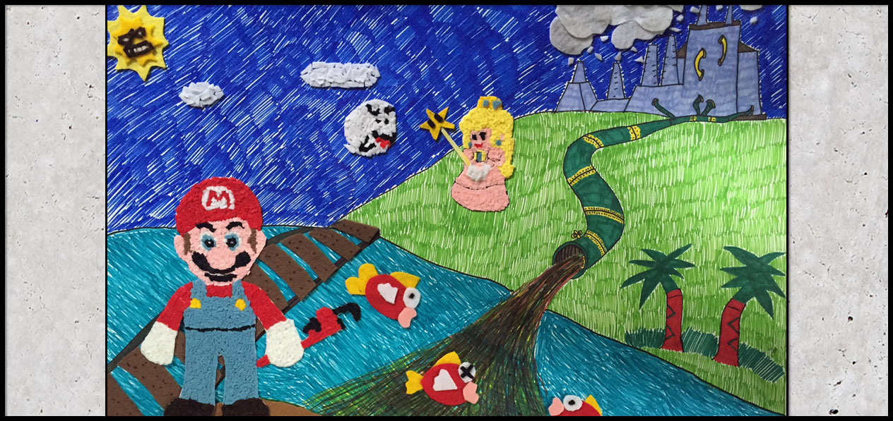
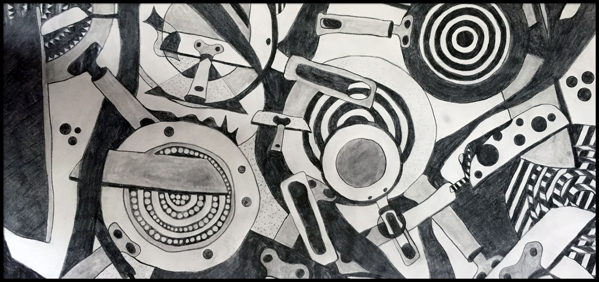

This piece was created with different colored sharpies. After laying out the design, I laid down little pieces of felt to create an image. This piece is super important to me because I used it for a final for my drawing 1 class. I learned about patience while creating this piece.

This piece was created using stencils of a mini frying pan. I had different views of the frying pan and I did different patterns on the sketches. I focused on using whites against blacks to create contrast.
Designer who strives for exceptional quality. I have been in the field for nearly 4 years, and have loved every second of it. I have enjoyed designing and building projects for small companies. Whether it is graphic design, video editing, animation, audio editing, or photography, I aim for precision and perfection. Enjoy!